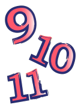
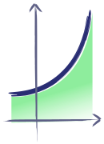
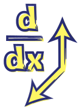

-
Grades 7 and 8
Mathematics
Negative numbers and fractions. Basic algebra through patterning, proportional reasoning, and other topics. Polygons, circles, and triangles. -

Grades 9/10/11
Mathematics
Number sense and algebraic expressions. Linear and quadratic relations. Functions. Sequences, series, and financial literacy. Measurement, geometry, and trigonometry. - Grade 12
Advanced Functions & Pre-Calculus
Properties of polynomial, rational, exponential, logarithmic, trigonometric, and radical functions, and the applications of these properties. - Grade 12
Calculus and Vectors
Derivatives of polynomial, rational, exponential, logarithmic, and trigonometric functions, and integral calculus. Real-world applications. Vectors, lines, and planes. -
Problem Solving and
Mathematical Discovery
Investigation of problem solving techniques involving problems from a wide spectrum of mathematical topics. - Computer Science
Python from scratch. Language independent programming lessons. Web basics. Web programming.
Courseware
The CEMC courseware materials feature lessons, interactive activities, enrichment challenges, and unlimited opportunity for practice with feedback. The courseware is online, free to use, and does not require registration. Start learning from a world-class group of educators today!
Check out the NEW additions to Grades 7 and 8 Mathematics!
|

CEMC
University of Waterloo, MC 6203
200 University Avenue West
Waterloo, Ontario, Canada N2L 3G1
Phone: 519 888 4808
Fax: 519 746 6592
Contact Us | Privacy | Terms and Conditions | © Copyright